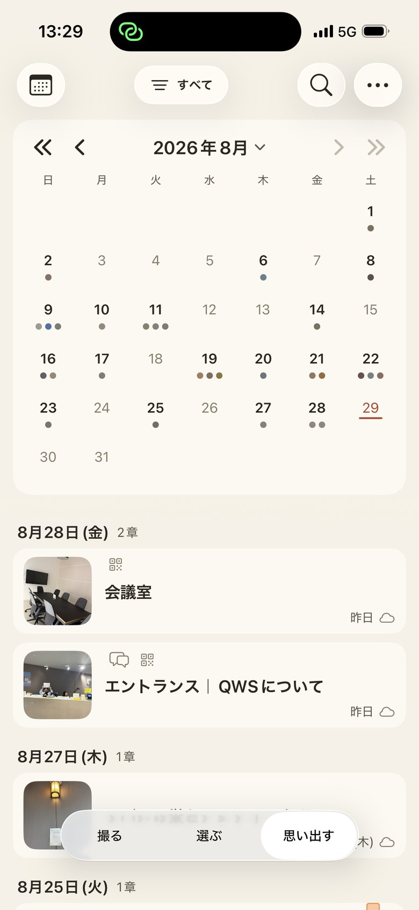
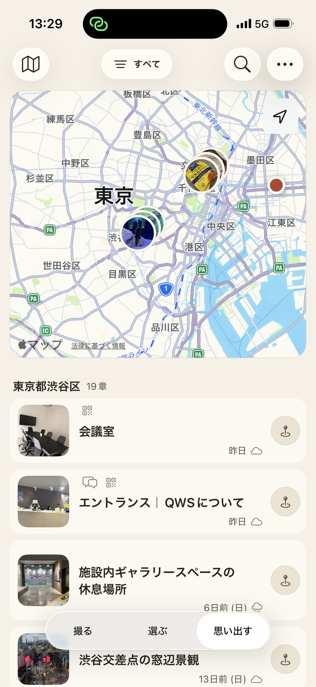

ふりかえる
忘れかけた日ほど、たどり着けるようにしてあります。
ホームには、今日とふりかえるが並びます。ふりかえるは、去年の同じ季節や、しばらく開いていない一枚を、そっと差し出す場所です。
探すときは、日付のならび・カレンダー・地図・地域から。「あの秋」からでも、「あの町」からでもたどり着けます。写真の下には、撮った日と時刻、それに場所の名前が出ます。


本棚の見かた（ホーム・カード・リスト・カレンダー・地図・地域）は、どのプランでも使えます。
贈る
受け取る人に、アプリは要りません。
聴く写真にすると、QR コードとリンクができます。相手はスマートフォンの標準カメラで読むだけ。ブラウザで朗読が始まります。インストールも登録も要りません。
LINE で送る、X に投稿する、ほかのアプリへ渡す。どれもそのまま。公開する期間は写真ごとに選べて、あとからいつでも止められます。
紙に印刷した一枚にも添えられます。壁に飾った写真や、アルバムの一枚が、聴ける思い出になります。
見えない人にも、同じ一枚
説明は、写真そのものに書き込まれます。だから SNS に投稿しても、写真アプリの中でも、読み上げの声でその一枚が伝わります。